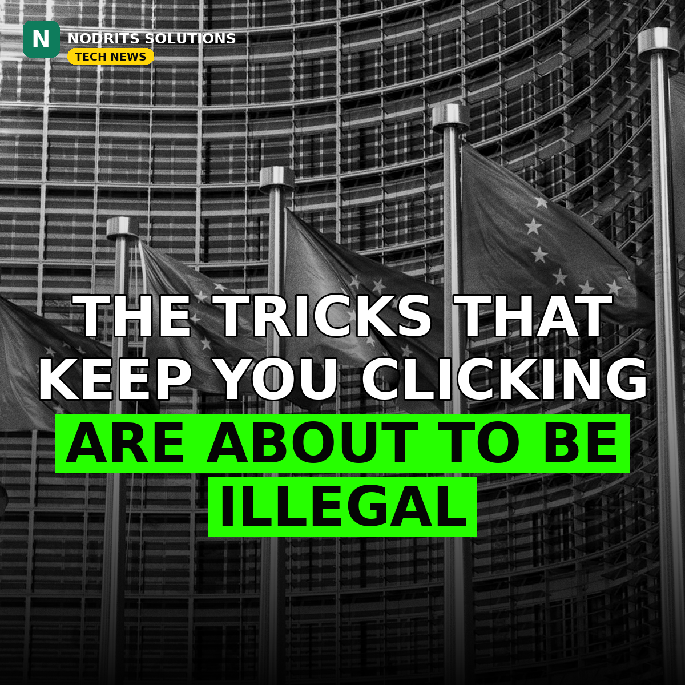

EU Unveils the Digital Fairness Act — the Law That Takes Aim at the Internet's Sneakiest Tricks

The European Commission has formally presented the Digital Fairness Act, a sweeping new proposal that would ban the manipulative design tricks — known as "dark patterns" — that apps, games and online stores use to keep people clicking, scrolling and spending. Companies that break the rules could face fines of up to 6% of their global annual turnover.
What happened
On November 11, 2026, the European Commission unveiled the Digital Fairness Act (DFA), a major update to EU consumer protection rules led by Justice Commissioner Michael McGrath. The proposal would replace the EU's 2005 Unfair Commercial Practices Directive with a regulation that applies directly in all 27 member states. At its core is a blacklist of ten manipulative designs that would be unfair in all circumstances — meaning regulators would no longer have to prove harm case by case. The package also includes a revision of the Consumer Protection Cooperation Regulation, giving the Commission power to investigate large cross-border cases directly. The proposal now goes to the European Parliament and the Council of the EU, where it must be agreed before it can become law — a process that typically takes a year or more — and it would apply 12 months after entering into force.
Why it matters
This is the first time the EU has tried to outlaw addictive design itself, not just the ads around it. The draft would let users switch off features designed to encourage compulsive or excessive use — endless scrolling, video autoplay and persistent prompts — and it extends similar rules to AI companions and AI shopping agents. For minors, it would ban paid loot boxes and pay-to-win mechanics in games, require in-game currencies to be shown in real money, and ban advertising based on profiling minors. Subscriptions would need a clear one-click cancel button, and free trials could not silently convert to paid plans without consent. The Commission estimates the rules could save consumers up to €13.7 billion a year, and spare €88.4 billion in economic losses between 2025 and 2035. Gaming organisations have already pushed back, calling the restrictions on virtual currencies and micro-transactions for minors "unworkable, unjustified and disproportionate."
What it means for you
If you run a website, an app or an online store that serves European users, this is a design brief written into law: no hidden renewal terms, no pre-ticked paid add-ons, no fake "almost sold out" warnings, no cancel button buried three menus deep. For everyone else, it means the internet's most exhausting tricks — the ones that make a five-minute task take twenty — could finally have an off switch. And because the rules would apply to any company trading in the EU, the design changes are likely to spill over to users far beyond Europe, just as GDPR did.
The Nodrits take
Good design never needed dark patterns — the best products earn the click instead of trapping it. If this law lands, honest UX stops being a nice-to-have and becomes a competitive edge. Do you think banning addictive design will make the internet better — or is this the EU going too far? Tell us in the comments.
Need a website, SaaS product or AI workflow built right?
Nodrits Solutions designs, develops and automates for businesses in Pakistan, the USA, UK, UAE and Saudi Arabia.
Talk to Nodrits →Sources: The Verge (EU proposes the Digital Fairness Act, Nov 11, 2026); Engadget (Europe wants to ban 'dark patterns' in apps and loot boxes for minors, Nov 11, 2026); Reuters reporting on the draft (Nov 9, 2026); European Commission presentation, Nov 11, 2026. Published November 12, 2026.